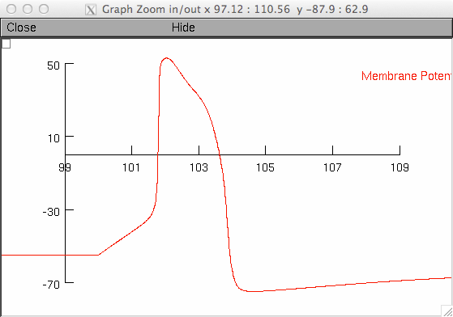
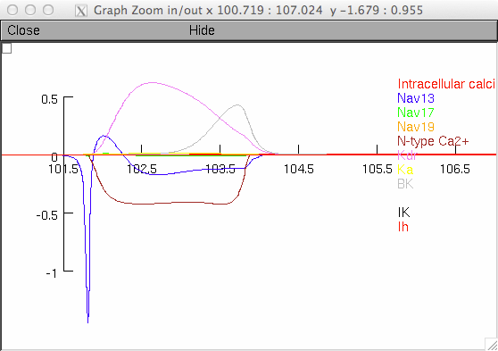
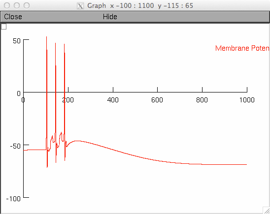
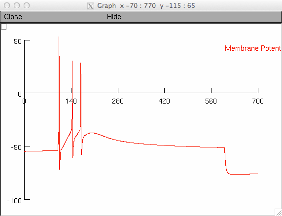

This is the model used in: Chambers, J. D., J. C. Bornstein, et al. (2014). "A detailed, conductance based computer model of intrinsic sensory neurons of the gastrointestinal tract." Am J Physiol Gastrointest Liver Physiol. pii: ajpgi.00228.2013. [Epub ahead of print] These simulations require the NEURON simulator available for free from http://www.neuron.yale.edu To run the model, first compile all the files in the ./mod directory (for example, type "nrnivmodl ./mod" at the command line after changing into in the directory containing the model). Then run one of the relevent (fig1.hoc, fig2.hoc, etc.) hoc files by typing "nrngui fig1.hoc" at the command line or by opening neuron and using the load_file function. Each of the fig#.hoc files will produce a graph of the membrane potential (or membrane current for Fig5.hoc) and produce 2 output files. The output file fig#mem.txt contains time in the first column and membrane potential in the second column. The output file fig#currents.txt contains time in the first first column and currents or concentrations in the subsequent columns (see individual hoc file for details). Fig1.hoc will also produce a second graph of the currents in the model (1A, 1B):   Fig2.hoc will produce Panel C2:  Comment out the stimuli in the hoc to produce Panels A2 and B2. Uncomment conductance changes highlighted in the hoc file to produce Panel D2. Fig3.hoc can take command line arguments. For example, to change the strength of the depolarising current pulse use "nrngui -c stimamp=150 fig3.hoc" for a 150 pA depoalrising current or "nrngui -c stimamp=350 fig3.hoc" for a 350 pA depolarising current. The total conductance of all currents (and parameters of Ih varied in Figure 8) can also be altered using command line arguments. For example, "nrngui -c gnav13=500 fig3.hoc" will change the total conductance of Nav1.3 (for a full list of variables see Define default variables section of the fig3.hoc). The value of the variable is divided by 1000 (or 100 for properties of Ih another than total conductance, see conductance changes section of fig3.hoc for details) and then multiplied with the baseline value for that current. So, passing a value of 500 for gnav13 decreases the total conductance to half, whereas passing a value of 2000 will double the total conductance. Without modification Fig3.hoc produces a graph like Fig3C2: 